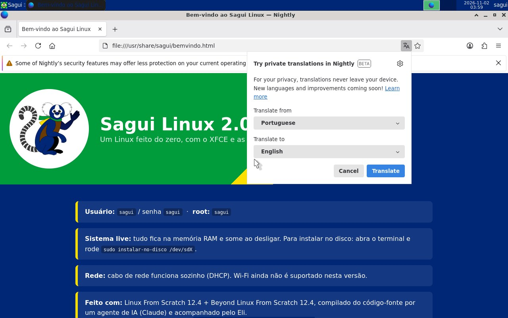

Como gravar no pendrive e dar boot
Em resumo: baixe a ISO, grave no pendrive com o balenaEtcher, desligue o Secure Boot e ligue o computador pelo pendrive.
- Gravar a ISO apaga todo o conteúdo do pendrive. Copie antes o que for importante.
- O Sagui Linux roda na memória RAM: o que você fizer nele some ao desligar. Não use para guardar arquivos.
- Usar o sistema live não altera o disco do computador. Só o script opcional
instalar-no-discomexe no disco (veja no fim da página). - De preferência, teste primeiro numa máquina virtual ou num computador antigo, que não seja o seu de trabalho.
1. Baixe e confira a ISO
Na página de download, escolha a edição Desktop (recomendada) ou Terminal. Se quiser, confira o SHA-256 do arquivo.
2. Grave no pendrive
- Baixe e instale o balenaEtcher em etcher.balena.io.
- Conecte o pendrive (2 GB ou mais para o Desktop; 1 GB para o Terminal).
- Abra o Etcher e clique em Flash from file. Escolha o arquivo
sagui-linux-2.0-x86_64.iso. - Clique em Select target e marque o pendrive. Confira o nome e o tamanho — não escolha o HD/SSD do computador.
- Clique em Flash!. O sistema pode pedir sua senha de administrador. Espere a gravação e a verificação (Validating) terminarem.
- Pronto. Se o Windows disser que o pendrive "precisa ser formatado", clique em Cancelar — é normal: o Windows não entende o formato da ISO.
- Baixe o Rufus em rufus.ie (Windows).
- Em Dispositivo, escolha o pendrive.
- Em Seleção de boot, clique em SELECIONAR e escolha a ISO.
- Clique em INICIAR. Vai aparecer a janela "Imagem ISOHybrid detectada": marque "Gravar no modo Imagem DD" e clique em OK.
- Confirme que os dados do pendrive serão apagados e espere terminar.
No Linux, dá para gravar direto pelo terminal. Cuidado: errar o nome do dispositivo apaga outro disco.
lsblk # descubra o pendrive, por exemplo /dev/sdb (confira o TAMANHO) sudo dd if=sagui-linux-2.0-x86_64.iso of=/dev/sdX bs=4M status=progress oflag=sync
Troque /dev/sdX pelo pendrive e use o disco inteiro (/dev/sdb), não uma partição (/dev/sdb1).
3. Prepare o computador
- Desligue o Secure Boot. Ao ligar o PC, entre no setup do firmware (geralmente F2, Del, F10 ou Esc), procure Security → Secure Boot (ou Boot → Secure Boot) e coloque em Disabled. Salve e saia. As imagens do Sagui não são assinadas, por isso o Secure Boot as bloquearia.
- Se o PC for antigo (só BIOS/Legacy), não precisa mexer em nada: a ISO também dá boot nesse modo.
4. Ligue pelo pendrive
Com o pendrive conectado, ligue o computador e aperte a tecla do menu de boot logo no começo:
| Fabricante | Tecla | Fabricante | Tecla |
|---|---|---|---|
| Dell | F12 | Acer | F12 |
| HP | F9 (ou Esc → F9) | ASUS | F8 (desktop) / Esc (notebook) |
| Lenovo | F12 ou botão Novo | Positivo | F7 ou F12 |
| Samsung | F10 | Placas Gigabyte/MSI/ASRock | F12 / F11 |
Escolha o pendrive (em PCs novos aparece como "UEFI: nome do pendrive"). Vai aparecer o menu do Sagui:
| Entrada do menu | Quando usar |
|---|---|
| Sagui Linux 2.0 (XFCE) | Normal — entra sozinha em 8 segundos. |
| (modo seguro de vídeo) | Se a tela ficar preta depois do menu: usa vídeo genérico (nomodeset). |
| (modo texto) | Só terminal, sem interface gráfica. |
| (console serial ttyS0) | Para testes em máquina virtual sem tela. |
Em 30 segundos a 1 minuto aparece o desktop (pelo USB 2.0 pode demorar um pouco mais). Na edição de terminal, entre com root / semente.

Testar numa máquina virtual (o jeito mais seguro)
VirtualBox
- Novo → Tipo Linux, Versão Other Linux (64-bit).
- 4 GB de RAM, 2 CPUs. Disco: pode não criar.
- Tela → Controladora gráfica VMSVGA, 64 MB de vídeo.
- Armazenamento → no drive óptico, escolha a ISO.
- Para testar UEFI: Sistema → marque Habilitar EFI.
QEMU (Linux)
qemu-system-x86_64 -enable-kvm -m 4096 -smp 2 \ -vga std -cdrom sagui-linux-2.0-x86_64.iso
Para UEFI, acrescente -bios /usr/share/ovmf/OVMF.fd.
Problemas comuns
| Sintoma | O que fazer |
|---|---|
| O pendrive não aparece no menu de boot | Grave de novo com o balenaEtcher; tente outra porta USB (de preferência USB 2.0 traseira); confirme que o Secure Boot está desligado e que o boot por USB está habilitado. |
| "Secure Boot violation" / "Invalid signature" | Desligue o Secure Boot (passo 3). |
| Tela preta depois do menu | Use a entrada modo seguro de vídeo. |
[live] ERRO: mídia não encontrada | O sistema não achou o pendrive em 60 s. Troque de porta USB e regrave. |
| "A sessão gráfica terminou" | Digite startx. O log fica em ~/.cache/xsession.log. |
| Sem internet | Só funciona por cabo. Confira com ip -br addr no terminal. |
| Firefox se chama "Nightly" | Normal: é o Firefox compilado do código-fonte sem a marca registrada da Mozilla, que não pode ser redistribuída. |
Opcional: instalar no disco
O sistema live traz o script instalar-no-disco, que cria as partições, copia o sistema e instala o GRUB (BIOS e UEFI). No terminal do Sagui:
lsblk # identifique o disco de destino sudo instalar-no-disco /dev/sdX # pede para digitar SIM antes de apagar
Depois, desligue, remova o pendrive e ligue de novo.